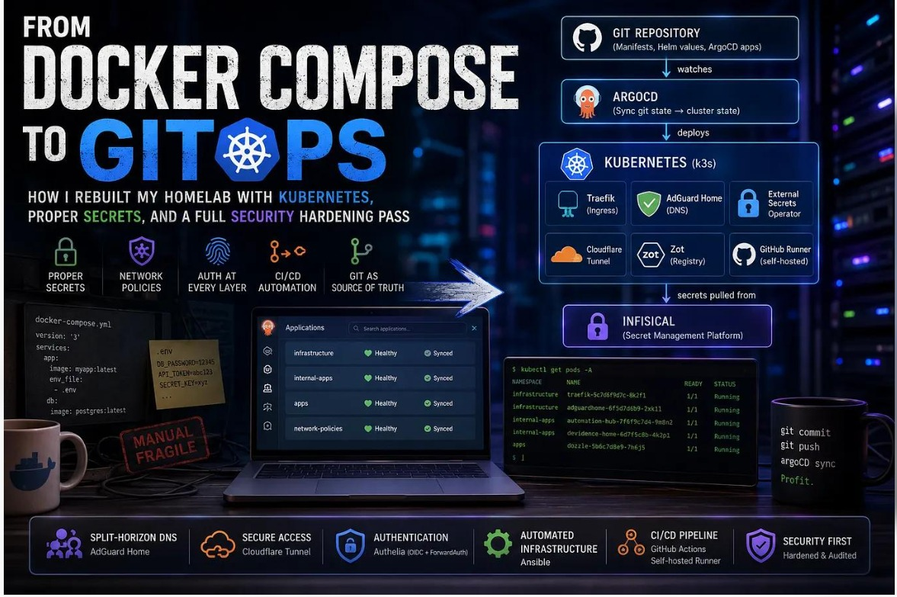

DevOps & Infrastructure · 2025
Membangun infrastruktur Kubernetes Homelab menggunakan VMware dan Ubuntu Server dengan K3s sebagai container orchestration platform. Mengimplementasikan GitOps menggunakan Argo CD untuk mengelola deployment aplikasi secara otomatis melalui GitHub, serta Helm untuk pengelolaan aplikasi Kubernetes.

OVERVIEW
Membangun lingkungan Kubernetes mandiri (homelab) untuk mempelajari orkestrasi container, deployment otomatis, dan praktik GitOps yang umum dipakai di industri DevOps modern.
Infrastructure & DevOps Engineer — merancang topologi VM, menginstal K3s, menyiapkan Argo CD dan Helm, serta membangun pipeline GitOps dari repositori GitHub ke cluster.
± 3 minggu (2025), dikerjakan secara mandiri sebagai proyek pembelajaran DevOps.
On Progress — cluster berjalan stabil, Argo CD berhasil melakukan sync otomatis saat repositori GitHub diperbarui.
FITUR
Cluster Kubernetes ringan (K3s) berjalan di atas Ubuntu Server dalam VM VMware, cocok untuk homelab dengan resource terbatas.
Sinkronisasi otomatis antara repositori GitHub dan cluster — cukup git push, Argo CD
langsung men-deploy perubahan.
Pengelolaan aplikasi Kubernetes menggunakan Helm chart agar konfigurasi dapat diparameterisasi dan digunakan ulang.
Aplikasi dikemas dengan Docker dan dipublikasikan ke registry sebelum di-deploy ke cluster.
On progress -Monitoring resource cluster dan aplikasi untuk memantau health, penggunaan CPU, dan memory.
Konfigurasi Ingress untuk mengakses aplikasi via domain lokal, dengan Service dan LoadBalancer internal.
ARSITEKTUR
Laptop/PC host menjalankan VMware Workstation dengan beberapa VM Ubuntu Server sebagai node cluster (1 control plane + 1–2 worker).
K3s diinstal di setiap VM. Control plane mengelola scheduling, worker node menjalankan Pod aplikasi. K3s dipilih karena ringan (~100 MB) dan mudah diinstal.
Argo CD berjalan sebagai aplikasi di dalam cluster, memantau repositori GitHub. Setiap perubahan manifest di repo langsung di-apply ke cluster (auto-sync).
Aplikasi dikemas dalam Helm chart. Argo CD me-render
chart dan men-deploy ke namespace yang sesuai
(mis. production, staging).
WORKFLOW
Perubahan manifest (Deployment, Service, Helm values) di-commit dan di-push ke repositori Git.
Argo CD melakukan polling repositori dan membandingkan desired state (Git) dengan actual state (cluster).
Jika ada perbedaan, Argo CD men-deploy manifest baru ke cluster tanpa intervensi manual.
Status sync terlihat di dashboard Argo CD. Jika gagal, tinggal git revert — cluster
kembali ke versi sebelumnya.
TEKNOLOGI
Virtualisasi
OS node cluster
Container runtime
Kubernetes ringan
Package manager
GitOps tool
Source of truth
Routing aplikasi
Health & metrics
PROSES
Solusi: Memilih K3s (bukan Kubernetes penuh) karena jauh lebih ringan, serta menonaktifkan komponen yang tidak dipakai (Traefik, ServiceLB) dan mengatur limit resource per Pod.
Solusi: Mengatur network adapter VMware
ke mode Bridged/NAT dengan benar
dan memastikan setiap node bisa saling ping dan
mengakses API server K3s.
Solusi: Memeriksa konfigurasi repository
(URL, branch, path) di Argo CD, memastikan auto-sync
aktif, dan menambahkan selfHeal: true agar
perubahan manual di cluster dikembalikan ke Git.
Solusi: Menyiapkan image registry lokal
(atau menggunakan Docker Hub publik) dan menambahkan
imagePullPolicy: Always pada manifest
agar update image selalu terambil.
PEMBELAJARAN
Pod, Deployment, Service, Namespace, ConfigMap, Secret, dan Ingress — serta bagaimana semuanya saling terhubung.
Git sebagai single source of truth — deployment jadi auditable, reproducible, dan mudah di-rollback.
Membuat chart reusable dengan values.yaml untuk environment berbeda (dev/staging/prod).
Membaca log Pod (kubectl logs), describe resource, dan debugging networking di cluster.
Silakan hubungi saya untuk diskusi atau kolaborasi.